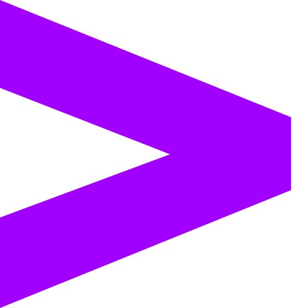
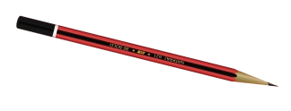
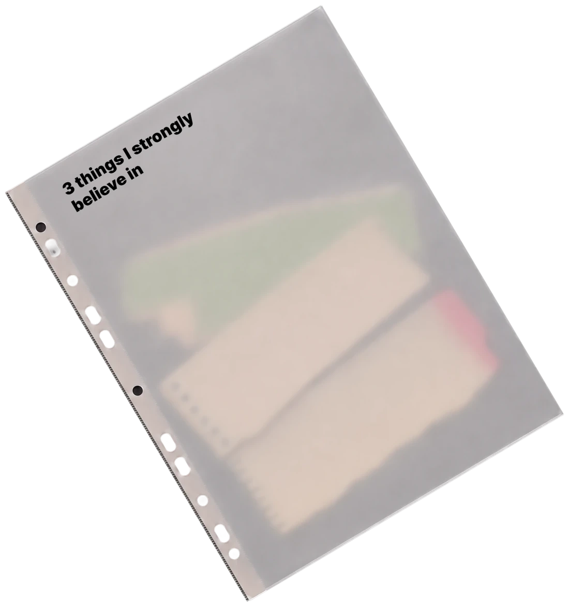
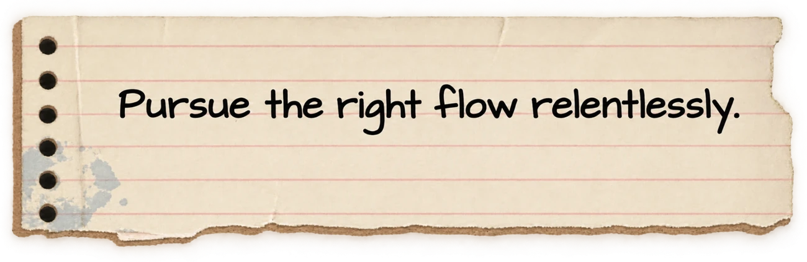
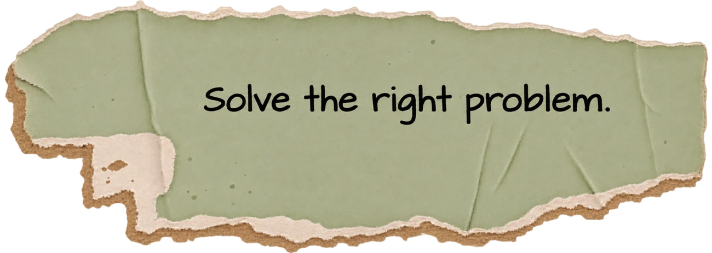
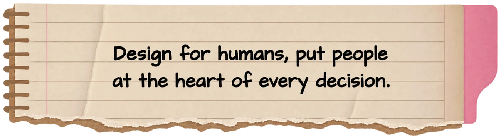

Welcome to Kirti’s portfolio


prev a summer intern @
Accenture Song

I connect what people need with what a business wants to achieve, then explore ideas, sketch them out, and build solutions that bring the two together.
Featured Projects
About my process
![Open notebook page titled How I work things out: I break the problem down by asking what is happening in the domain and where the flow is breaking down, I sketch a few ways through, and I bring ideas to life in Figma, work through every interaction and use AI to turn designs into working prototypes that I test with users, learn from and improve. The right page has photos of me presenting and the note: this is my carefully crafted process, presented time and again, classic yet remarkably effective.](assets/about/notebook.webp)




